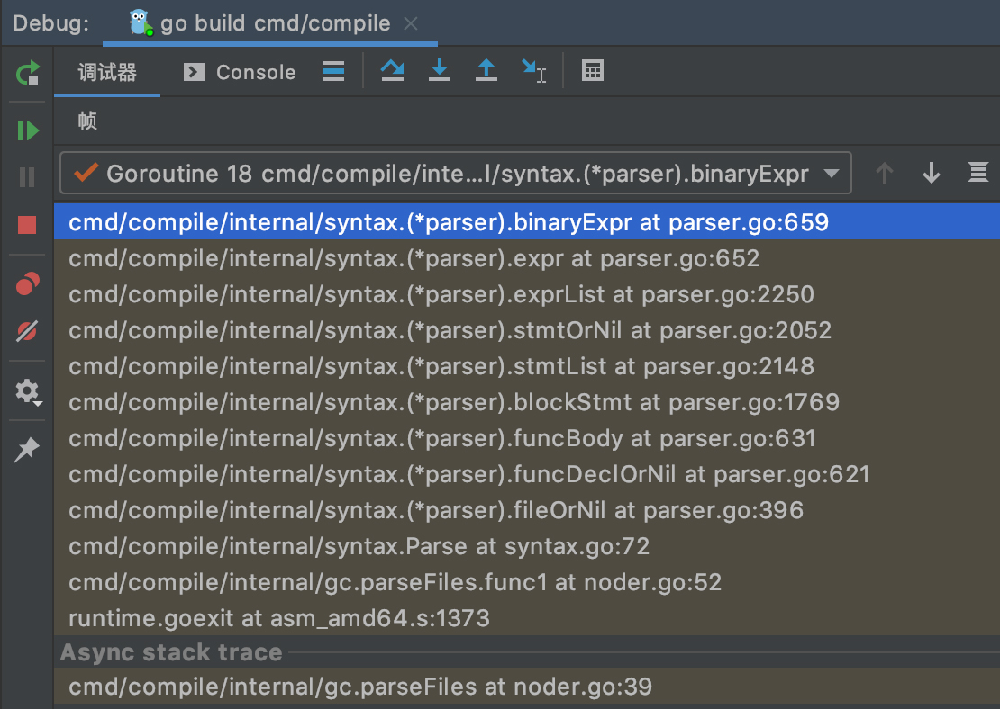
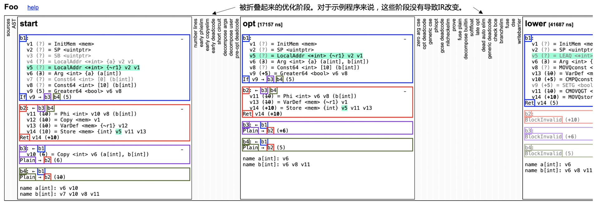
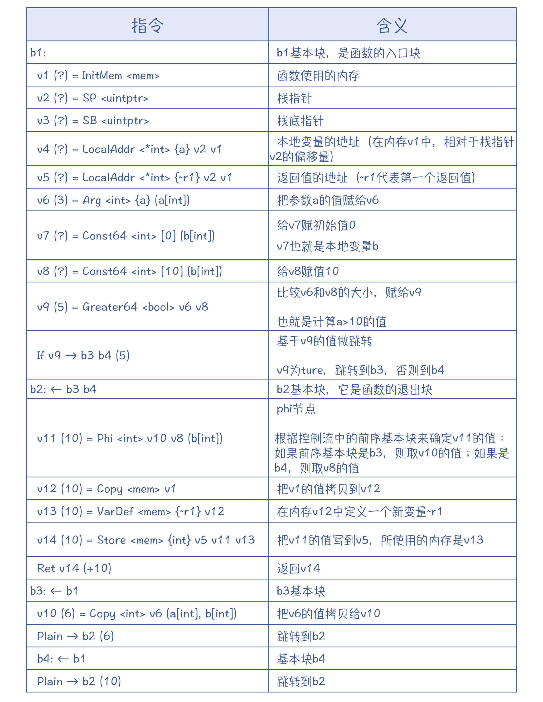
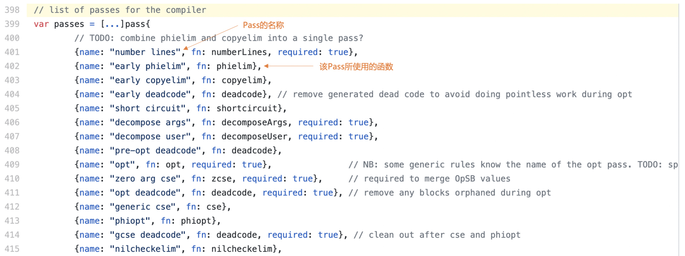
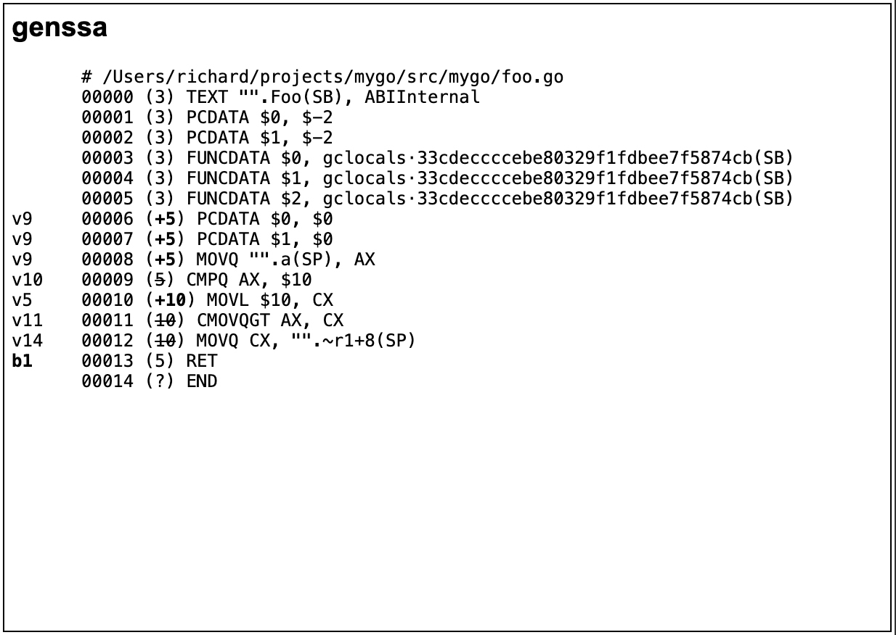

- 00 学习指南 如何学习这门编译原理实战课？.md.html
- 00 开篇词 在真实世界的编译器中游历.md.html
- 01 编译的全过程都悄悄做了哪些事情？.md.html
- 02 词法分析：用两种方式构造有限自动机.md.html
- 03 语法分析：两个基本功和两种算法思路.md.html
- 04 语义分析：让程序符合语义规则.md.html
- 05 运行时机制：程序如何运行，你有发言权.md.html
- 06 中间代码：不是只有一副面孔.md.html
- 07 代码优化：跟编译器做朋友，让你的代码飞起来.md.html
- 08 代码生成：如何实现机器相关的优化？.md.html
- 09 Java编译器（一）：手写的编译器有什么优势？.md.html
- 10 Java编译器（二）：语法分析之后，还要做些什么？.md.html
- 11 Java编译器（三）：属性分析和数据流分析.md.html
- 12 Java编译器（四）：去除语法糖和生成字节码.md.html
- 13 Java JIT编译器（一）：动手修改Graal编译器.md.html
- 14 Java JIT编译器（二）：Sea of Nodes为何如此强大？.md.html
- 15 Java JIT编译器（三）：探究内联和逃逸分析的算法原理.md.html
- 16 Java JIT编译器（四）：Graal的后端是如何工作的？.md.html
- 17 Python编译器（一）：如何用工具生成编译器？.md.html
- 18 Python编译器（二）：从AST到字节码.md.html
- 19 Python编译器（三）：运行时机制.md.html
- 20 JavaScript编译器（一）：V8的解析和编译过程.md.html
- 21 JavaScript编译器（二）：V8的解释器和优化编译器.md.html
- 22 Julia编译器（一）：如何让动态语言性能很高？.md.html
- 23 Julia编译器（二）：如何利用LLVM的优化和后端功能？.md.html
- 24 Go语言编译器：把它当作教科书吧.md.html
- 25 MySQL编译器（一）：解析一条SQL语句的执行过程.md.html
- 26 MySQL编译器（二）：编译技术如何帮你提升数据库性能？.md.html
- 27 课前导读：学习现代语言设计的正确姿势.md.html
- 28 前端总结：语言设计也有人机工程学.md.html
- 29 中端总结：不遗余力地进行代码优化.md.html
- 30 后端总结：充分发挥硬件的能力.md.html
- 31 运行时（一）：从0到语言级的虚拟化.md.html
- 32 运行时（二）：垃圾收集与语言的特性有关吗？.md.html
- 33 并发中的编译技术（一）：如何从语言层面支持线程？.md.html
- 34 并发中的编译技术（二）：如何从语言层面支持协程？.md.html
- 35 并发中的编译技术（三）：Erlang语言厉害在哪里？.md.html
- 36 高级特性（一）：揭秘元编程的实现机制.md.html
- 37 高级特性（二）：揭秘泛型编程的实现机制.md.html
- 38 综合实现（一）：如何实现面向对象编程？.md.html
- 39 综合实现（二）：如何实现函数式编程？.md.html
- 40 成果检验：方舟编译器的优势在哪里？.md.html
- 不定期加餐1 远程办公，需要你我具备什么样的素质？.md.html
- 不定期加餐2 学习技术的过程，其实是训练心理素质的过程.md.html
- 不定期加餐3 这几年，打动我的两本好书.md.html
- 不定期加餐4 从身边的牛人身上，我学到的一些优秀品质.md.html
- 不定期加餐5 借助实例，探究C++编译器的内部机制.md.html
- 划重点 7种编译器的核心概念与算法.md.html
- 期末答疑与总结 再次审视学习编译原理的作用.md.html
- 热点问题答疑 如何吃透7种真实的编译器？.md.html
- 用户故事 易昊：程序员不止有Bug和加班，还有诗和远方.md.html
- 知识地图 一起来复习编译技术核心概念与算法.md.html
- 结束语 实战是唯一标准！.md.html
- 捐赠
24 Go语言编译器：把它当作教科书吧
你好，我是宫文学。今天这一讲，我来带你研究一下Go语言自带的编译器，它可以被简称为gc。
我之所以要来带你研究Go语言的编译器，一方面是因为Go现在确实非常流行，很多云端服务都用Go开发，Docker项目更是巩固了Go语言的地位；另一方面，我希望你能把它当成编译原理的教学参考书来使用。这是因为：
- Go语言的编译器完全用Go语言本身来实现，它完全实现了从前端到后端的所有工作，而不像Java要分成多个编译器来实现不同的功能模块，不像Python缺少了后端，也不像Julia用了太多的语言。所以你研究它所采用的编译技术会更方便。
- Go编译器里基本上使用的都是经典的算法：经典的递归下降算法、经典的SSA格式的IR和CFG、经典的优化算法、经典的Lower和代码生成，因此你可以通过一个编译器就把这些算法都贯穿起来。
- 除了编译器，你还可以学习到一门语言的其他构成部分的实现思路，包括运行时（垃圾收集器、并发调度机制等）、标准库和工具链，甚至连链接器都是用Go语言自己实现的，从而对实现一门语言所需要做的工作有更完整的认识。
- 最后，Go语言的实现继承了从Unix系统以来形成的一些良好的设计哲学，因为Go语言的核心设计者都是为Unix的发展，做出过重要贡献的极客。因此了解了Go语言编译器的实现机制，会提高你的软件设计品味。
扩展：每种语言都有它的个性，而这个个性跟语言设计者的背景密切相关。Go语言的核心设计者，是Unix领域的极客，包括Unix的创始人和C语言的共同发明人之一，Ken Tompson。Rob Pike也是Unix的核心作者。
Go语言的作者们显然希望新的语言体现出他们的设计哲学和口味。比如，致力于像Unix那样的简洁和优雅，并且致力于让Go再次成为一款经典作品。
所以，在已经研究了多个高级语言的编译器之后，我们可以拿Go语言的编译器，把整个编译过程再重新梳理和印证一遍。
好了，现在就开始我们今天探索的旅途吧。
首先，我们来看看Go语言编译器的前端。
重要提示：照例，你要下载Go语言的源代码，本讲采用的是1.14.2版本。并且，你最好使用一个IDE，便于跟踪调试编译器的执行过程。- Go的源代码中附带的介绍编译器的文档，写得很好、很清晰，你可以参考一下。
词法分析和语法分析
Go的编译器的词法分析和语法分析功能的实现，是在cmd/compile/internal/syntax目录下。
词法分析器是scanner.go。其实大部分编程语言的词法分析器的算法，都已经很标准了，我们在Java编译器里就曾经分析过。甚至它们处理标识符和关键字的方式也都一致，都是先作为标识符识别出来，然后再查表挑出关键字来。Go的词法分析器并没有像V8那样在不遗余力地压榨性能，它跟你平常编码的方式是很一致的，非常容易阅读。
语法分析器是parser.go。它是一个标准的手写的递归下降算法。在解析二元表达式的时候，Go的语法分析器也是采用了运算符优先级算法，这个已经是我们第N次见到这个算法了，所以你一定要掌握！不过，每个编译器的实现都不大一样，而Go的实现方式相当的简洁，你可以去自己看一下，或者用调试器来跟踪一下它的执行过程。

图1：用IDE工具Goland跟踪调试编译过程
Go的AST的节点，是在nodes.go中定义的，它异常简洁，可以说简洁得让你惊讶。你可以欣赏一下。
Go的语法分析器还有一个很有特色的地方，就是对错误的处理。它在处理编译错误时，有一个原则，就是不要遇到一个错误就停止编译，而是要尽可能跳过当前这个出错的地方，继续往下编译，这样可以一次多报几个语法错误。
parser.go的处理方式是，当语法分析器在处理某个产生式的时候，如果发现了错误，那就记录下这个错误，并且往下跳过一些Token，直到找到一个Token是属于这个产生式的Follow集合的。这个时候编译器就认为找到了这个产生式的结尾。这样分析器就可以跳过这个语法单元，继续处理下面的语法单元。
比如，在解析函数声明语句时，如果Go的语法分析器没有找到函数名称，就报错“expecting name or (”，然后往后找到“{”或者“;”，这样就跳过了函数名称的声明部分，继续去编译后面的函数体部分。
在cmd/compile/internal/syntax目录下，还有词法分析器和语法分析器的测试程序，你可以去运行测试一下。
最后，如果你还想对Go语言的语法分析有更加深入地了解，我建议你去阅读一下Go语言的规范，它里面对于每个语法单元，都有EBNF格式的语法规则定义，比如对语句的定义。你通过看代码、看语言规范，积累语法规则的第一手经验，以后再看到一段程序，你的脑子里就能反映出它的语法规则，并且能随手画出AST了，这是你学习编译原理需要建立的硬功夫。比如说，这里我节选了一段Go语言的规范中针对语句的部分语法规则。
Statement =
Declaration | LabeledStmt | SimpleStmt |
GoStmt | ReturnStmt | BreakStmt | ContinueStmt | GotoStmt |
FallthroughStmt | Block | IfStmt | SwitchStmt | SelectStmt |
ForStmt | DeferStmt .
SimpleStmt = EmptyStmt | ExpressionStmt | SendStmt | IncDecStmt |
Assignment | ShortVarDecl .
好，在了解了Go语言编译器的语法分析工作以后，接下来，我们再来看看它的语义分析阶段。
语义分析（类型检查和AST变换）
语义分析的程序，是在cmd/compile/internal/gc目录下（注意，gc的意思是Go Compiler，不是垃圾收集的意思）。在入口代码main.go中，你能看到整个编译过程的主干步骤。
语义分析的主要程序是在typecheck.go中。这里你要注意，不要被“typecheck”的名称所误导，它其实不仅是做类型检查，还做了名称消解（Name Resolution）和类型推导。
你已经知道，名称消解算法的特点，是分阶段完成。举个例子，在给表达式“a=b”中的变量b做引用消解之前，编译器必须先处理完b的定义，比如“var b Person”，这样才知道符号b指的是一个Person对象。
另外，在前面学习Java编译器的时候，你已经知道，对方法体中的本地变量的消解，必须放在最后，才能保证变量的使用总是引用到在它前面的变量声明。Go的编译器也是采用了相同的实现思路，你可以借此再回顾一下这个知识点，加深认识。
在语义分析阶段，Go的编译器还做了一些AST变换的工作。其中就有内联优化和逃逸分析这两项工作。在我们之前解析的编译器当中，这两项工作都是基于专门做优化的IR（比如Sea of Nodes）来做的，而在Go的编译器里，却可以基于AST来做这两项优化。你看，是不是真实世界中的编译器，才能让你如此开阔眼界？
你可以用“-m”参数来编译程序，它会打印出与内联和逃逸方面有关的优化。你可以带上多个“-m”参数，打印出嵌套层次更深的算法步骤的决策。
go build -gcflags '-m -m' hello.go
好了，现在我们借gc编译器，又复习了一遍语义分析中的一些关键知识点：名称消解算法要分阶段，在语义分析阶段会对AST做一些变换。我们继续来看gc编译器下一步的处理工作。
生成SSA格式的IR
gc编译器在做完语义分析以后，下一步就是生成IR了。并且，gc的IR也是SSA格式的。你可以通过gc，来进一步了解如何生成和处理SSA格式的IR。
好，首先，我们来看看Go语言的IR是什么样子的。针对下面的示例代码foo.go，我们来看下它对应的SSA格式的IR：
package main
func Foo(a int) int {
var b int
if (a > 10) {
b = a
} else {
b = 10
}
return b
}
在命令行中输入下面的命令，让gc打印出为foo函数生成的IR。在当前目录下，你能看到一个ssa.html文件，你可以在浏览器中打开它。
GOSSAFUNC=Foo go build -gcflags '-S' foo.go
在这个文件当中，你能看到编译器对IR做了多步的处理，也能看到每次处理后所生成的IR。
gc的IR是基于控制流图（CFG）的。一个函数会被分成多个基本块，基本块中包含了一行行的指令。点击某个变量，你能看到它的定义和使用情况（def-use链，图中显示成绿色）。你还能看到，图中灰色的变量，根据定义和使用关系，会发现它们没有被使用，所以是死代码，可以删除。

图2：foo示例程序各个处理阶段的IR
针对第一个阶段（Start阶段），我来给你解释一下每行指令的含义（可参考genericOps.go），帮助你了解Go语言的IR的设计特点。

你可以参考代码库中介绍SSA的文档，里面介绍了Go的SSA的几个主要概念。
下面我来给你解读一下。
首先是值（Value）。Value是SSA的最主要构造单元，它可以定义一次、使用多次。在定义一个Value的时候，需要一个标识符（ID）作为名称、产生该Value的操作码（Op）、一个类型（Type，就是代码中<>里面的值），以及一些参数。
操作码有两类。一类是机器无关的，其定义在genericOps.go中；一类是机器相关的，它是面向特定的CPU架构的，其定义在XXXOps.go中。比如，AMD64Ops.go中是针对AMD64架构CPU的操作码信息。
在做Lower处理时，编译器会把机器无关的操作码转换为机器相关的操作码，有利于后序生成目标代码。机器无关的优化和机器相关的优化，分别作用在采用这两类不同操作码的IR上。
Value的类型信息，通常就是Go语言中的类型。但有几个类型是只会在SSA中用到的特殊类型，就像上面语句中的 ，即内存( TypeMem)类型；以及TypeFlags，也就是CPU的标志位类型。
这里我要特别讲一下内存类型。内存类型代表的是全局的内存状态。如果一个操作码带有一个内存类型的参数，那就意味着该操作码依赖该内存状态。如果一个操作码的类型是内存类型，则意味着它会影响内存状态。
SSA的介绍文档中有一个例子，能帮助你理解内存类型的用法。
在这个例子中，程序首先会向地址a写入3这个值。这个时候，内存状态就修改了（从v1到了v10）。接着，把地址a的值写入地址b，内存状态又发生了一次修改。在IR中，第二行代码依赖第一行代码的内存状态（v10），因此就导致这行代码只能出现在定义了v10之后。
// *a = 3 //向a地址写入3
// *b = *a //向b地址写入a的值
v10 = Store <mem> {int} v6 v8 v1
v14 = Store <mem> {int} v7 v8 v10
这里你需要注意，对内存的读和写（各种IR一般都是使用Load和Store这两个词汇）是一类比较特殊的指令。其他的Value，我们都可以认为它们是在寄存器中的，是计算过程中的临时变量，所以它们在代码中的顺序只受数据流中依赖关系的制约。而一旦中间有读写内存的操作，那么代码顺序就会受到一定的限制。
我们可以跟在Graal编译器中学到的知识印证一下。当你读写一个Java对象的属性的时候，也会涉及内存的读写，这些操作对应的IR节点，在顺序上也是受到限制的，我们把它们叫做固定节点。
此外，Value结构中还包含了两个辅助信息字段：AuxInt和Aux。AuxInt是一个整型值，比如，在使用Const64指令中，AuxInt保存了常量的值；而Aux则可能是个复杂的结构体，用来保存每个操作码的个性化的信息。
在IR中你还能看到基本块（Block），这是第二个重要的数据结构。Go编译器中的基本块有三种：简单（Plain）基本块，它只有一个后继基本块；退出（Exit）基本块，它的最后一个指令是一个返回指令；还有if基本块，它有一个控制值，并且它会根据该值是true还是false，跳转到不同的基本块。
第三个数据结构是函数（Func）。函数是由多个基本块构成的。它必须有一个入口基本块（Entry Block），但可以有0到多个退出基本块，就像一个Go函数允许包含多个Return语句一样。
现在，你已经知道了Go的IR的关键概念和相关的数据结构了。Go的IR在运行时就是保存在Value、Block、Func等内存结构中，就像AST一样。它不像LLVM的bitcode还有文本格式、二进制格式，可以保存在文件中。
那么接下来，编译器就可以基于IR，来做优化了。
基于SSA格式的IR做优化
SSA格式的IR对编译器做优化很有帮助。
以死代码删除为例，Value结构中有一个Uses字段，记录了它的使用数。如果它出现在另一个Value的操作码的参数里，或者是某个基本块的控制变量，那么使用数就会加1；而如果Uses字段的值是0，那就证明这行代码没什么用，是死代码，可以删掉。
而你应该记得，在第7讲中曾提到过，我们需要对一个函数的所有基本块都扫描一遍甚至多遍，才能知道某个变量的活跃性，从而决定是否可以删除掉它。那相比起来，采用SSA格式，可以说简单太多了。
基于这样的IR来做优化，就是对IR做很多遍（Pass）的处理。在cmd/compile/internal/ssa/compile.go的代码里，列出了所有这些Pass，有将近50个。你能看到每个处理步骤执行的是哪个优化函数，你还可以在ssa.html中，看到每个Pass之后，IR都被做了哪些修改。

图3：compiler.go中的Pass
这些处理算法都是在cmd/compile/internal/ssa目录下。比如cse.go里面是消除公共子表达式的算法，而nilcheck.go是被用来消除冗余的nil检查代码。
有些算法还带了测试程序（如cse_test.go，nilcheck_test.go）。你可以去阅读一下，看看测试程序是如何构造测试数据的，并且你还可以通过Debugger来跟踪测试程序的执行过程，从而理解相关优化算法是如何实现的，这是一个很有效的学习方式。
另外，gc还有一些比较简单的优化算法，它们是基于一些规则，对IR做一些重写（rewrite）。Go的编译器使用了自己的一种DSL，来描述这些重写规则：针对机器无关的操作码的重写规则，是在generic.rules文件中；而针对机器有关的操作码的重写规则是在XXX.rules中，比如AMD64.rules。
我们来看几个例子：在generic.rules中，有这样一个机器无关的优化规则，它是把x*1的运算优化为x。
图4：把x*1的运算优化为x的规则
在AMD64.rules中，有一个机器相关的优化规则，这个规则是把MUL指令转换为LEA指令，LEA指令比MUL指令消耗的时钟周期更少。
(MUL(Q|L)const [ 3] x) -> (LEA(Q|L)2 x x)
generic.rules中的规则会被rulegen.go解析，并生成Go代码rewritegeneric.go。而AMD64.rules中的规则，被解析后会生成rewriteAMD64.go。其中，Lower的过程，也就是把机器无关的操作码转换为机器相关的操作码，它也是用这种重写规则实现的。
通过gc这种基于规则做指令转换的方法，你应该产生一个感悟，也就是在写软件的时候，我们经常要设计自己的DSL，让自己的软件更具灵活性。比如，gc要增加一个新的优化功能，只需要增加一条规则就行了。我们还可以再拿Graal编译器印证一下。你还记得，Graal在生成LIR的时候，要进行指令的选择，那些选择规则是用注解来生成的，而那些注解规则，也是一种DSL。
好了，谈完了优化，我们继续往下看。
生成机器码
最后，编译器就可以调用gc/ssa.go中的genssa方法，来生成汇编码了。
在ssa.html的最右边一栏，就是调用genssa方法以后生成的汇编代码（采用的是Go编译器特有的格式，其中有些指令，如PCDATA和FUNCDATA是用来与垃圾收集器配合的）。

你可能会问，编译器在生成机器码之前，不是还要做指令选择、寄存器分配、指令排序吗？那我们看看gc是如何完成这几项任务的。
寄存器分配（regalloc.go）作为一个Pass，已经在生成机器码之前执行了。它采用的是线性扫描算法（Linear Scan Register Allocator）。
指令选择会分为两部分的工作。一部分工作，是在优化算法中已经做了一些指令选择，我们前面提到的重写规则，就蕴含了根据IR的模式，来生成合适的指令的规则；另一部分工作，则放到了汇编器当中。
这就是Go的编译器与众不同的地方。原来，gc生成的汇编代码，是一种“伪汇编”，它是一种半抽象的汇编代码。在生成特定CPU的机器码的时候，它还会做一些转换，这个地方可以完成另一些指令选择的工作。
至于指令排序，我没看到过在gc编译器中的实现。我请教了谷歌的一位研究员，他给我的信息是：像AMD64这样的CPU，已经能够很好地支持乱序执行了，所以指令重排序给gc编译器的优化工作，带来的好处很有限。
而gc目前没有做指令排序，还有一个原因就是，指令重排序算法的实现代价比较高，而gc的一个重要设计目标，就是要求编译速度要快。
扩展：Go语言的另外两个编译器，gccgo和GoLLVM都具备指令重排序功能。
课程小结
这一讲，我给你介绍了gc编译器的主要特点。之所以能压缩在一讲里面，是因为你已经见识了好几款编译器，渐渐地可以触类旁通、举一反三了。
在gc里面，你能看到很多可以借鉴的成熟实践：
- 语法分析：递归下降算法，加上针对二元表达式的运算符优先级算法；
- 语义分析：分阶段的名称消解算法，以及对AST的转换；
- 优化：采用了SSA格式的IR、控制流图（CFG）、多个Pass的优化框架，以及通过DSL支持的优化规则。
所以在这一讲的开头，我还建议你把Go语言的编译器作为你学习编译原理的“教学参考书”，建议你在图形化的IDE界面里，来跟踪调试每一个功能，这样你就能很方便去观察它的算法执行过程。
本讲的思维导图如下：

一课一思
在gc编译器里面，内联优化是基于AST去做的。那么，它为什么没有基于SSA格式的IR来做呢？这两种不同的实现会有什么差异？欢迎你在留言区发表你的看法。
参考资料
- Introduction to the Go compiler 官方文档，介绍了gc的主要结构。
- Introduction to the Go compiler’s SSA backend 官方文档，介绍了gc的SSA。
- Go compiler internals: adding a new statement to Go - Part 1、Part2。在这两篇博客里，作者做了一个实验：如果往Go里面增加一条新的语法规则，需要做哪些事情。你能贯穿性地了解一个编译器的方法。
- Go compiler: SSA optimization rules description language这篇博客，详细介绍了gc编译器的SSA优化规则描述语言的细节。
- A Primer on Go Assembly和A Quick Guide to Go’s Assembler 。gc编译器采用的汇编语言是它自己的一种格式，是“伪汇编”。这两篇文章中有Go汇编的细节。
© 2019 - 2023 Liangliang Lee. Powered by gin and hexo-theme-book.